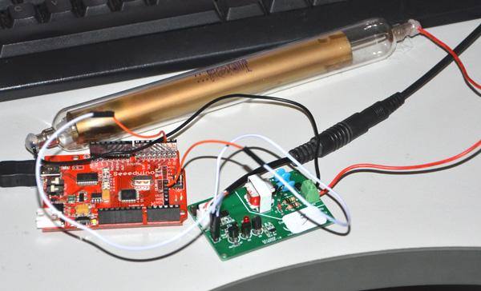
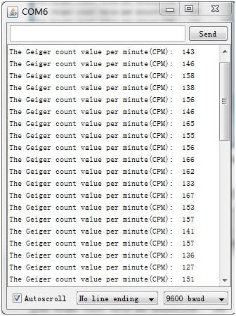

This is the Geiger Counter Seeedstudio working on. It will be great useful for you to detect the nuclear radiation. With the help of our customer, now the first 10pcs of beta edition is underprocessing. Now it is powered by 9 volts battery, and the output voltage is about 420V. With the count value gained from this product, you can change it into absorbed dose of the nuclear radiation.
This product is only for hobby application and is not as precise as the professional instruments. So don't use it in some place that need high precision. And the output voltage will go down if the battery has a lower voltage than 9 volts. So an 9V adapter will be better than a battery.
The pramaters of J408γ(the Geiger Tube)
| Items | Min | Norm | Max | Unit |
| Start Counting Voltage | 285 | - | 340 | Volts |
| Recommended Working Voltage | - | 400 | - | Volts |
| Minimal Plateau Length | - | 80 | - | Volts |
| Maximum Plateau Slope Rate | - | 0.125% | - | /v |
| Maximum Background Counting Rate | - | - | 80 | /min |
| Amibent Temperature | -40 | - | 50 | °C |
The Geiger Counter is used to detect the gamma rays which can make the gas-filled tube(Geiger-Müller tube)conductive. The tube amplifies this conduction by a cascade effect and outputs a pulse, then this will be showed by a blink of the LED. With the frequency of the pulse, we can gain the strength of the nuclear radition. For this product, you can use the SIG pin to gain the count value which can be changed into absorbed dose. Below shows how to use this product.
Look the picture below. Plug a 9v battery or a 9v adapter into the white battery jack on the left and screw the geiger tube to the green terminal on the right. Put the power switch on the ON position, if you can see the red LED flickers, it means the system works. Only through the led you can't gain the accurate result. By using the seeedduino you can gain the exact result of the count value through the SIG pin. Also through an equation you can change the data into dose rate.

Below shows how to count the pulse the Geiger Counter outputs through the SIG pin. It uses the interrupt function to realise this goal.
Demo code { int x=0; void setup() { Serial.begin(9600); attachInterrupt(0, count,RISING); } void loop() { delay(60000); Serial.println(" "); Serial.print("The Geiger count value per minute(CPM): "); Serial.print(x, DEC); x=0; } void count() { x=x+1; } }
Connect seeeduino, the Geiger Tube and the battery in the way as describes in the Hardware Installation section. By the programme above, we can gain the count value in CPM(count per minute). See the picture below.

Using these data, we can caculate the absorbed dose rate through the equation below.
Radiation Dose=(（Count_value-80）/60）×（0.0084×3600）/300 (Gy/h)。
(In this equition, 80 is the background count value(CPM) of the Geiger Tube. The sensibility of j408r(the Geiger Tube) under Co60 is 300cps/uR/s, and 1Gy=100rad=119roentgen (R), so 300cps=0.0084uGy/s. So we gain the equation above in the unit of "uGy/h".)
The average CPM is 150. Use the equition above, we can konw that the absorbed dose rate is 117.6nGy/h,
If you have questions or other better design ideas, you can go to our forum or wish to discuss.
| Revision | Descriptions | Release |
|---|---|---|
| v0.9b | Initial public release | date |
Give the product link on Bazaar.
Other related products and resources.
This documentation is licensed under the Creative Commons Attribution-ShareAlike License 3.0 Source code and libraries are licensed under GPL/LGPL, see source code files for details.
Links to external webpages which provide more application ideas, documents/datasheet or software libraries.
Copyright (c) 2008-2016 Seeed Development Limited (www.seeedstudio.com / www.seeed.cc)